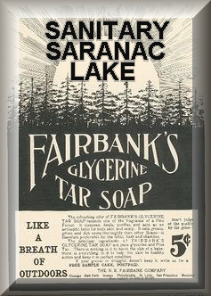

IF YOU THINK LIFE WAS DULL AND BORING IN SARANAC LAKE IN THE DAYS OF YORE, YOU'RE WRONG! CHECK OUT THESE NEWS ITEMS FROM THE PAST!
IF YOU THINK LIFE WAS DULL AND BORING IN SARANAC LAKE IN THE DAYS OF YORE, YOU'RE WRONG! CHECK OUT THESE NEWS ITEMS FROM THE PAST!
FIRST A WORD FROM OUR SPONSOR

A COUPLE OF SARANAC LAKE MURDER MYSTERIES
HOW CHARLIE BROWN EVENTUALLY PAID THE PIPER

SARANAC LAKE'S 77 YEAR OLD (STILL UNSOLVED) MYSTERY OF
THE DISAPPEARANCE OF PETE TANZINI--"BOOTLEGGING WILL O' THE WISP"

SARANAC LAKE'S MOST TRAGIC FIRE-JULY 4, 1925

WHEN THE JOLLY ROGER FLEW OVER SARANAC LAKE

SARANAC LAKE'S SECRET FLYING MACHINE FACTORIES OF 1918

USEVELED PETREVITCH IVANOFF'S HONEYMOON FROM HELL IN SARANAC LAKE

10 OF JOHN BROWN'S MEN FOLLOWED HIM TO HIS GRAVE (WITH A MONTH LAYOVER IN SARANAC LAKE)

PRESIDENT GROVER CLEVELAND TAKES 115 TROUT A DAY FROM UPPER SARANAC LAKE (OR SO HE SAID!)

SOME OLD TIME CANDY STORE NOSTALGIA ---
MEMORIES OF POP WALSH'S CIGAR STORE

SARANAC LAKE WAS TOUTED AS ONE OF THE WORLD'S MOST PROGRESSIVE VILLAGES IN 1912. WHAT'S HAPPENED SINCE?
